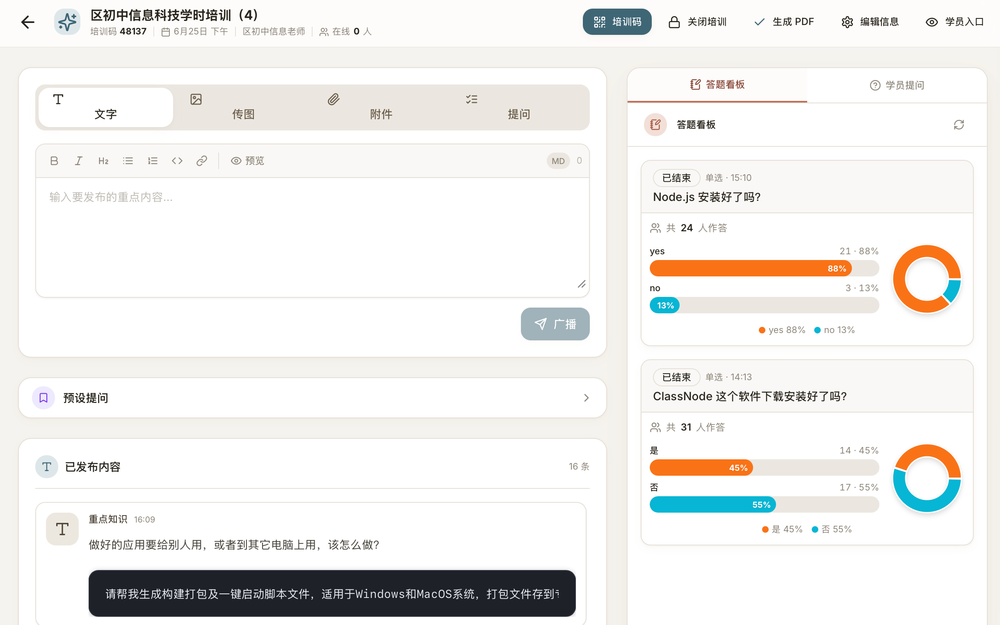

开源作品
我们的项目
每个作品都源于真实的课堂与教研需求，免费开源，开箱即用。
 持续更新 · v1.5.4
持续更新 · v1.5.4
ClassNode
互动课堂 · AI智能体互动平台
把你在 Coze、智谱清言、百度文心等平台创建的 AI 智能体，安全可控地送到每位学生面前。 支持标准 / 分组 / 高级三种运行模式，扫码即入、全景监控、一键导出报告——专为课堂教学设计。
查看详情

即将上线ClassMark
听课留痕 · 教师培训互动平台
一款专注于教师培训的线上互动交流平台。主讲人可实时推送培训中的文字、图片、操作截图， 发布简答 / 单选 / 多选题即时采集学员作答数据；可共享重要文档，学员也能随时向主讲人提问并获得答复。 让每一次培训都"留痕、可回看、有数据"。
开发中，敬请期待